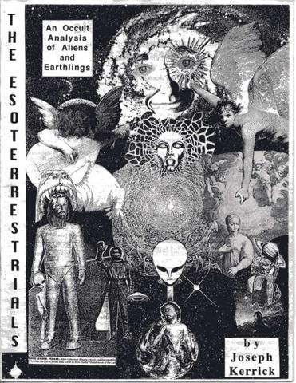
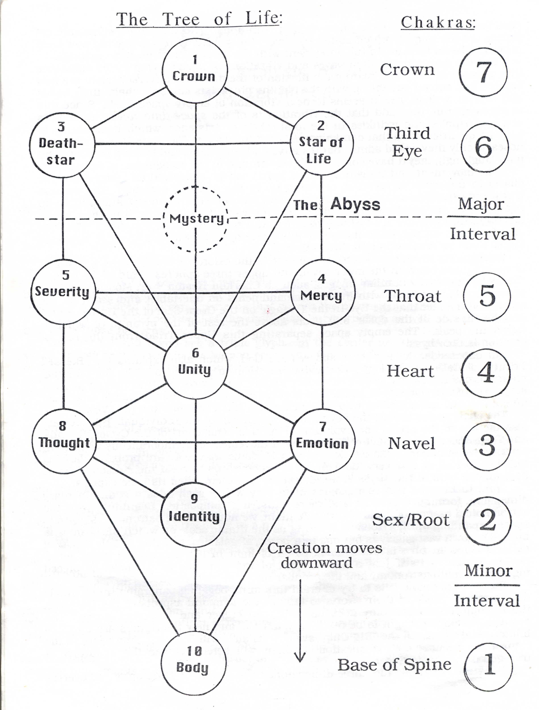
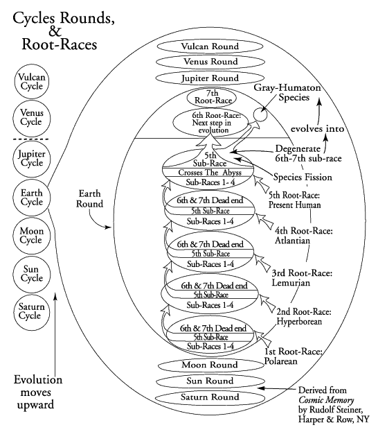
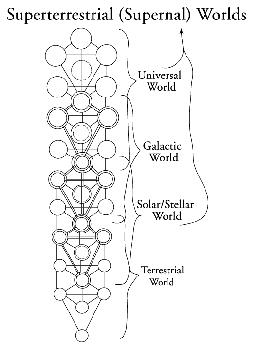
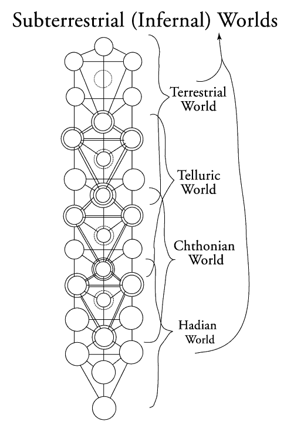
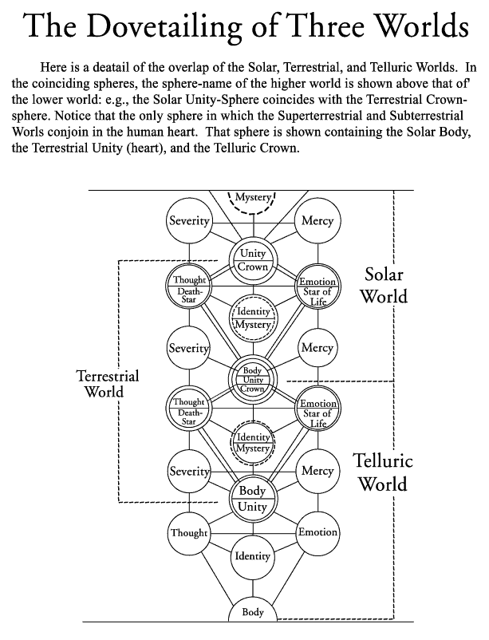
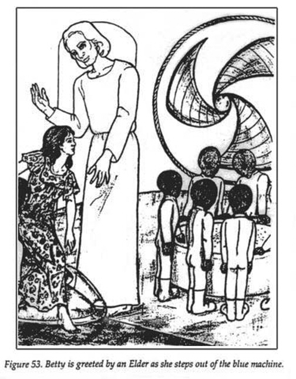

THE
ESOTERRESTRIALS
© Copyright
1997 by Joseph Kerrick

Is it really conceivable that Earth is being visited by extraterrestrial beings?
The answer is YES -- but you can
conceive it ONLY if you have unified your own awareness enough to not get hung
up on certain dualistic
conundrums, like the question of whether the ETs are spiritual (angels, gods,
demons) or physical (space aliens). If
you can’t handle “both of the above”, then you’ll have to settle for “neither”.
Or for the everlasting insipidity of
agnosticism, which is basically just a way of getting reconciled to your
ignorance.
Those who wish to KNOW, and who will never rest until they do, are not AGnostics
but GNOSTICS: people in quest
of true unified knowledge of themselves and of the cosmos -- for indeed, the
same patterns that govern the
operation of the Universe are to be found in the deepest soul of the individual
human being, as well as the forces
that drive those patterns.
Our first illustration depicts the Kabbalistic Tree of Life on the left, and
shows how its ten spheres correlate with the
seven chakras on the right, subtle energy centers within the human organism, as
mapped by Hindu metascience.
Materialistic scientism would find it incomprehensible that a human anatomy
chart could also be a map of the
cosmos, yet this is the case with these glyphs.

When we add
the second illustration, that of the Cycles, Rounds, and Root-Races, we find
that the whole
configuration is a chart not only of space but of time, revealing the cyclic
patterns in the entire course of the
evolution of the Universe.

The esoteric
conception of evolution and the nature of humanity is very different from that
of scientism. Of those
readers whose worldview has been totally constricted within the latter, I can
only ask that they suspend their
disbelief long enough to get a sense of the former, and then make an informed
judgement as to which
Weltanschauung fits inside the other as a tiny distorted piece of a larger
picture.
The very foundations and starting-points of the two cosmologies are at opposite
ends of the spectrum. Scientism
begins with dead, inert matter, and postulates that life arose from it, and
subsequently mind from life, by methods
that it has not yet even begun to fathom, much less explain. Esotericism, on the
contrary, begins with life and mind,
which we assert are one substance and one entity. The best word for this in
English is Spirit, as inadequate and
misleading as this may be in the prevailing matter-dominated paradigm, which
views spiritual things as insubstantial
or non-existant. Fortunately, scientism is reaching the end of its tether, as
its own discoveries ineluctably bring it
back to the reality of Spirit. Even the cutting edge of postmodern knowledge is
still incredibly primitive in terms of
real science, but we can use the crudities of quantum theory to present an
inkling. Physics now accepts that the
fundaments of existence are not "building blocks of matter" or billiard-ball
particles, but rather patterns of waves and
vibrations. These dynamic subatomic essences are the warp of which matter is
woven, the solidity of matter having
now been proven to be an illusion, in full agreement with the most ancient
esoteric writings.
But the question remains: waves and vibrations of what? What is the substance
that waves and vibrates, creating
the illusion of the material universe? Here the new science has not yet caught
up with the old; the physicists can
only shake their heads and say: ah, well, er, gee. it seems to be a vibration of
empty space itself. Since this is an
oxymoron, they add that the vibration is of the space-time field, an endless
series of ripples and wrinkles in the total
fabric of existence, which itself seems to have no qualities at all that can be
perceived or measured. So there it is,
under their noses; if only they would admit that it's alive and conscious, and
looking back at them (and laughing!),
they'd have come all the way around to the recognition of Spirit.
The movement and transmutation of Spirit can be conceived as going down our
charts in the mode of creating, or
rising up in the mode of evolving. The process transcends time as a
one-dimensional vector, so both the top-down
and bottom-up perspectives are simultaneously valid. (In the esoteric worldview,
time, like space, has three
dimensions; but this will have to await the book for explanation.) The Tree of
Life shows us the basic nature of this
movement, in which a dyad of opposing forces finds its resolution in a third
sphere.
Another key mystery revealed by the Tree is the existence of the Abyss, a vast
gulf of nothingness between the
lower seven and upper three spheres. This is the hidden theory behind many
familiar images, such as Charlton
Heston ~ er, Moses ~ coming down from Mount Sinai with three commandments on one
tablet and seven on the
other; and the fact that the Eye in the Triangle on the Great Seal of the United
States (on the flipside of the dollar
bill) floats above the rest of the pyramid of which it forms the peak. The empty
space separating this Upper Triad
from the rest of
creation is the Abyss.
In one sense, the top three spheres are God, which also explains the "Blessed
Trinity" of Catholic theology. God
exists in "Heaven", which is really the supernal realm Across the Abyss. But if
we now compare our charts, we find
that in another sense the triune God dwells in the two highest chakras of a
human being, or at least an enlightened
human being who has opened his Third Eye and won his Crown.
The chakras are indeed the key to the development of the individual. But they
are also the key to the origin and
evolution of species. Our chart of the Cycles, Rounds. and Root-Races is a
product of Theosophy, a movement
contemporaneous with 19th-century evolutionism. Charles Darwin and Madame
Blavatsky are probably dancing
together in Hell at this very moment, so it behooves us to meld their
discoveries as best we can here in the physical
world, lest we join them when its time expires.
And in fact the two cosmologies meld very well - each adds a complementary
dimension, forming a grander and
more satisfying composite. Beginning with the astronomical branch of
evolutionary scientism, we note that the
astronomers' forte is space, expanding our horizons by showing us the titanic
scale on which the cosmos is built.
Our own vast galaxy is but one in a galaxy of galaxies, and this is only the
local cluster/ This in turn is but a small
patch of light in a humongously larger ultra-cluster, which is itself just a
smaller part of the Universe as a whole, as
pieced together by radio astronomy and the peculiar magic of mathematics.
But what a shame it is to try to cram this mind-boggling panorama into a single
dimension of time! In their efforts to
fathom the temporal aspects of the Universe, the astrophysicists can only keep
on toting up bigger and bigger
numbers. The cosmos was once thought to be 5 billion years old, and now the
figures are up to 14 billion. And when
will the "Big Gulp" swallow us all? Will it be a trillion years in the future?
No, because the real question is: when will
scientists see the absurdity of trying to fit it all into linear time?
If instead we take the three-dimensional cyclic time of Theosophy and overlay
onto it the astronomical cosmos, we
find that its entire life-cycle from "Big Bang" to "Big Gulp" is just one Round
in a series of seven, and the Rounds in
turn make up a Cycle, which again is just one in a series of seven Cycles.
Surely any sufficiently expansible mind
can see the elegance of this newly elided cosmic conception, in which the nearly
infinite immensity of the
astronomers' space is fleshed out with corresponding knowledge of the nearly
eternal cycles of Theosophical time.
If all of the foregoing premises can be accepted (at least hypothetically), our
correlated glyphs can show us the
answers to many mysteries which have stumped postmodern thought. For instance:
why do societies, civilizations,
and even life-forms rise and inevitably fall? The answer is built into the very
shape of reality. An organism or
collective entity can only evolve in a direct process until it reaches the
Abyss. At that point it must either Cross the
Abyss or else devolve. It's only possible
to Cross the Abyss in certain circumstances at certain definite points of the
cycle, so most often the result is death
or devolution.
The "Earth Round" can be construed as our local experience of the total
evolution of the current Universe from its
creation to its end. The Theosophical concept of "root-races" is completely
different from the common biological
notions of race, as evidenced by the tenet that the first two root-races, the
Polarean and Hyperborean, had not
even "condensed" into what we consider to be solid matter. Likewise, the
Lemurian was the first root-race to solidify
into physical bodies, and only then did the separation into sexes take place.
With these provisos, we can now explain how every phase and subcycle of the
evolutionary process occurs via the
dynamic of the seven chakras, which as we have seen corrspond to the ten spheres
of the Tree of Life. Thus each
root-race develops through seven successive sub-races (and these again are not
identical with biological races),
each of which comes into being by activating thejnext chakra. On the larger
scale, each root-race is born by means
of a still higher unfolding of each successive chakra.
Each of the first four root-races ceased progressive development with the fifth
sub-race (corresponding to the fifth
chakra), because they did not Cross the Abyss ~ and in fact they could not,
because the root-races are a part of the
larger time-body of total humanity, which will be complete only at the end of
the Round. Therefore, in each of these
cycles, a two-edged process occurred: the root-race continued to develop into a
sixth and seventh sub-race, but
these were degenerate ~ evolutionary dead-ends. Meanwhile, the most advanced and
astute members of the fifth
sub-race separated themselves from the rest of the social organism, and in this
isolated gene-pool they effected the
mutational change which unfolded the next chakra. Thus they evolved into the
next root-race. This process is the
underlying reality behind legends of how survivors of the sinking of Atlantis
founded the earliest civilizations of our
present historical cycle.
The important and urgent point to note about this pattern involves our present
root-race, the fifth. The Theosophists
named it "Aryan", this being well before Hitler came along and gave the word a
bad reputation. Obviously the
"Aryan" root-race is not all white, since it includes the whole of historical
humanity.
The present state of global civilization marks the climax of the fifth sub-race
of the fifth root-race. This means that it
is also the time of the apotheosis of the entire Round: this is the moment when
the human species itself must Cross
the Abyss.
The basic apocalyptic implications of this fact should be clear, but we must
wait until the writing of the book to
explicate the details. For now we must turn our attention back to the other
crucial aspect of the situation, namely the
aliens.

The Tree of
Life operates on many levels. The basic Tree in our first diagram can be taken
as a complete model of
the entire Universe, of every being who lives in it, and of all the beings
together in their collectivities and hierarchies.
However, in the next layer of complexity, the basic Tree is construed as
representing only our immediate terrestrial
world. The Kabbalistic teaching is that there are three higher worlds above
this, and each world is represented by a
complete Tree, with the spheres overlapping in a particular way, as shown in the
next diagram (see also the
"Dovetailing Worlds" diagram further down the page). This figure is
traditionally called "Jacob's Ladder," indicating
that it portrays the esoteric reality behind the Bible story in which Jacob saw
a ladder reaching up into Heaven, with
angels ascending and descending upon it.
For indeed, the spheres of these higher Trees are said to be the habitations of
ANGELS. Every sphere is
designated by the name of an angel, which can also be understood as a collective
entity: a whole race, tribe,
species, or “choir” of angels. And all these legions of angels are ranked into
three basic orders corresponding to the
three worlds.
The up-and-down / higher-and-lower imagery is supplemented in some kabbalistic
sources by three-dimensional
imagery of smaller spheres within larger spheres. Thus the “higher” worlds are
also the GREATER worlds, and
contain the LESSER worlds within themselves -- just as within the Universe are
galaxies, within galaxies are solar
systems, and within solar systems are planets. So the formations of the material
cosmos do in fact body forth the
nested spheres of the angelic realms. And so it is that this ancient glyph
correlates perfectly with modern
astronomical knowledge, fleshing it out with the HIGHER knowledge of life-forms
far beyond the power of radio
telescopes to descry. For this perennial wisdom shows us that there exist beings
so vast that their reach is
coextensive with the Universe itself; that these are served by entities of
galactic proportion; and that the will of the
Galactic Gods is in turn administered by angelistic creatures who oversee every
stellar system and the lesser beings
within it.
Thus we return to our familiar terrestrial world: the level of organic
life-forms existing on the surface of planet Earth
in this, our solar system. So it is that material life is the lowest form,
existing at the very bottom of the hierarchy. Or is
it?

No indeed,
for there is still another series of Trees BELOW it, as illustrated in our next
diagram. The postmodern
mind, speaking from within its constrictions, asks: “How can this be?” How can
there exist regions that are less
tangible than our familiar solid, physical world, and yet are not superior to it
and greater, like the worlds of those
beings traditionally described as angels and gods, but rather inferior to it,
and lesser? Is this the hellish realm of the
very devils? And how can such creatures be real, since science has found no
trace of them below the surface of the Earth?
We shall not here explore the fact that postmodern scientism knows less about
the interior of the Earth than it does
about the farthest stars, and that for all we know a mystically rejuvenated
Hitler may be holding court in the Hollow
Earth, and sending forth his vimanas from the aperture at the South Pole to
bedevil the civilization that rejected him.
But from another angle, it’s significant that this latter-day warlord has taken
his place in postmodern mythology (in
myths better known in Europe than in North America) with the dark rulers of the
underworld who have reigned within
the collective psyche for lo! these many eons.
And who are the real, objective beings who cohabit with the phantoms of the
human Id, and manipulate them like
pawns in a chess match? Tradition gives us the names of all the entities
mentioned in Chapter 2, including fairies,
jinns, elementals, demons, and indeed those devils. From this range we can see
that we are not dealing with a
simple dualism of good above and evil below, but rather with a complete spectrum
-- a sliding scale of all the
complexity you would expect in a Universe full of exotic and divergent beings.
In a more generic bent, traditional cosmologies also give us a varied
nomenclature for the beings from beyond the
Earth in relation to those beneath it, refering to them respectively as
supermundane and submundane, supernal
and infernal, and superterrestrial and subterrestrial. We shall make selective
use of these names as the need
arises. For now let’s just point out that these beings have always been known in
every culture, with at least a
general outline of their typology. It has remained for esoteric traditions to
transmit the details, the methodologies of
communion, and the content of the communications. How does this whole grand map
of worlds upon worlds within worlds intersect with the UFO/ET phenomenon as it’s
unfolded on Earth in the last half-century? The most rudimentary answer is that
flying saucers and space aliens
constitute the outer form that the “esoterrestrials” have adopted as the means
for their interaction with humanity in the present age.

The
specifics of this interaction hinge on the complexities of the overlapping
spheres of the Tree. We can only hit
some of the basic points in this brief treatment. First of all, in our diagram
of "The Dovetailing of Three Worlds", note
that the BODY of the Solar World coincides with the UNITY sphere of the
Terrestrial World, which is the human
heart. People who experience higher beings, whether perceived as tall, blond
space aliens, angels per se, or Beings
of Light in a near-death experience, all do so by means of an activation of
their heart chakra, generating the specific
heightened mode of consciousness which makes this contact possible.
Proceeding up the Tree, we find that the IDENTITY sphere of the Solar beings
FILLS THE ABYSS of the Earthly
Tree, which explains why humans have always (properly) looked up to these
entities as Gods and envoys of Gods.
The time is rapidly approaching when we must collectively Cross the Abyss
ourselves and meet our fate; but in all
the long ages it took to prepare ourselves for this moment of apotheosis, the
divinities of our local solar system, and
of Earth as the only organic planet in it, were there to shepherd us along the
way.
Meanwhile, all sources agree that the type of aliens most commonly encountered
are the short, big-headed, bug-
eyed “Grays”. Who are these creatures, and what is their relation to humanity?
It seems clear that despite the “outer
space” trappings, most of the Gray aliens, and possibly all of them, are
subterrestrials.
Within this basic categorization, the abduction literature shows a wide range of
behavior exhibited by beings who all
have the general appearance of “Gray aliens”. We are probably dealing with
different types and groupings of
submundane beings who all adopt the “Gray” form (with variations) for certain
reasons which I will clarify below.
Traditional literature and folklore inform us that the subterrestrials are not
all bad, though some of them are pretty
damn horrid. Many of them WANT things from human beings, and some species of
these lower entities even seem
to DEPEND for their very existence on the subtle substances they extract from
physical creatures. They are thereby
at best symbiotes, but most of these types are probably parasitic. And some of
the worst are LITERAL vampires, the
source of all the legends and horror tales.
At the same time, some jinns, elementals, and even demons are reputed to be
friendly and beneficial to humans.
Even some of these well-disposed types, though, often lie and deceive the humans
who come in contact with them,
sometimes apparently for sheer sport; but the grizzlier varieties attempt to
practice large-scale, elaborate deceptions
on the human race, for ends that are very grievous indeed. Almost all the types
are said to be able to “cast a
glamour” upon incarnate people, to mesmerize them and make them see and believe
things that are not really there.
These attributes all have obvious relevance to the reputed actions of the Grays
and other aliens in the abduction
phenomenon, but there has never been a comprehensive matrix of knowledge in
which these matters could be fully
understood and properly dealt with -- until now. Let’s look at the Tree of Life
with its lower extensions in our
diagram. Here we have a map of the attributes of the subterrestrials, and of the
relation of the first layer of them to
human beings. Let’s see if it can tell us anything informative about the Gray
aliens.
First we note that the Body-sphere of the Telluric world (“telluric” means
“earthy” with metaphysical overtones) does
not overlap the terrestrial Tree, but is two levels below its lowest sphere.
This means that the natural bodies of the
Telluric beings are not material, but rather fall below the “wavelength” of
matter, just as the angelic superterrestrials
are above it. However, the Unity-sphere of the Telluric Tree coincides with the
Body-sphere of the Terrestrial Tree,
which means that when these beings activate their heart chakra, they can BECOME
PHYSICAL -- they can manifest
temporarily in the physical world of humans, and then cease the manifestation
when their heart chakra deactivates.
Becoming physical is literally a higher experience for them, just like the
experience of mystic Oneness for a human,
or even falling in love -- these being functions of the heart chakra /
Unity-sphere in the human world.
But perhaps the most intersting thing of all in relation to the abduction
phenomenon is that the human Identity-
sphere fills the Telluric Abyss. The Identity-sphere is a sort of lower ego (the
Mercy/Severity spheres constitute the
higher one, centered in the throat chakra), the sphere of PRIMAL identity; some
modern Kabbalists have associated
it with the Id. Here, then, is the device by which a given race of
subterrestrials takes on a collective identity and
appearance in accordance with imagery and beliefs in the human collective
unconscious. Thus the Telluric beings
today take on the appearance of space aliens of certain types.
But is it merely an appearance? Is it all just a grand deception on the part of
parasitic beings to steal our vital
energies? Or is there also a larger process at work, guided by higher
influences? I believe there is, and that the
best clues to the mystery are provided by the experiences of abductee Betty
Andreasson Luca. From an esoteric
standpoint, this is the most revelatory case ever reported; and fortunately,
it’s also one of the most thoroughly
investigated and documented cases, thanks largely to the work of Raymond E.
Fowler, who led a number of teams
of seasoned and highly-credentialed investigators in exploring the case for more
than twenty years, and has to date
written four books about it: The Andreasson Affair Parts I and II, and The
Watchers Parts I and II.
From early childhood to age thirty, Betty Luca had a number of encounters with
beings in the mold of the typical
Gray aliens. Two of these experiences involved abductions and journeys on
saucer-shaped craft; but, lest we jump
to the conclusion that these were space ships, the destination of the saucers
was in both cases underground, flying
through huge caverns, one of which was reached by first diving underwater. Both
episodes culminated with Betty
having religious/spiritual experiences. One of them was the experience of “the
ONE”, which as Betty described it
under hypnosis was clearly the experience of ecstatic Unity that results from a
full opening of the heart chakra. If the
aliens who conducted Betty to this experience were indeed subterrestrials, the
implication would be that they must
have been functioning at the highest peak of develpment possible to their
species, namely the Telluric Crown-
sphere, which coincides with the human heart-sphere. And in fact the Gray
leaders of the two “expeditions” do come
across as superior beings, giving Betty advanced metaphysical information.
Betty had more encounters after the investigation of her case was begun. The
metaphysical elements continued to
be prominent, including the occasional brief appearances of a second type of
entity: beings who looked completely
human except that they were seven feet tall; they had long blond-white hair and
pale-colored skin and eyes, and
wore long white robes. In other words, the angelic image could hardly be more
striking, especially in light of the fact
that Betty is a Christian. She calls these beings the ELDERS.
At length there came a point, as reported in the latest of Fowler’s four books,
The Watchers II, when the Elders
seemed to completely take over Betty’s encounters. The Grays arrived again and
took her off in a saucer, but now
for the first time it flew into outer space, where it docked with a huge
cylindrical mothership. This was the domain of
the Elders, who apparently commanded the Grays in a symbiotic relationship. This
journey climaxed for Betty in
another ecstatic experience of the ONE, this time accompanied by an Elder and a
Gray; the latter was evidently
under the tutelage of the Elder, as was Betty.
In some of her earlier abductions, Betty was forced to undergo invasive
procedures by the Grays, one of them
involving an apparent implant behind her eyeball. She was not, however,
implanted with fetuses nor used in any way
in the alien “hybridization project”, and she bore and raised seven healthy
children in her normal terrestrial life.
Nevertheless, in one of her abductions the Grays made her witness the taking of
two fetuses from a fellow female
abductee, and then shown the process by which such fetuses were technologically
altered to grow into adult Grays.
The implication was not so much a hybridization of human and Gray, but rather
that this was the normal method of
Gray reproduction, which would seem to make their species totally parasitic on
humanity.
The mystery of the Andreasson case is why such apparent alien skulduggery is
carried on under the auspices of the
Elders, who in _The Watchers II_ are portrayed as discharging unmistakable
angelic and benevolent functions, not
only in relation to Betty but to other people whom they invisibly visit upon the
Earth. What higher purpose could
possibly be served by this macabre process of making Grays from humans?
Still assuming that there is some type of hybridization aspect to it, we note
that in many other reports Gray aliens
often explain this “project” by telling the abductees that the human race is
destined for imminent extinction by one
means or another, and that the aliens are thereby “preserving the human seed”
which might sprout again in some
future existence. In Betty’s case, the Grays told her that the human species is
becoming sterile. What are we to
make of such claims?

Here we must
refer back to the pattern of meta-evolution revealed in the Theosophical
conception of Rounds and
root-races. Every previous root-race degenerated into a dead end after the fifth
sub-race. To all sensitive eyes, it’s
clear that the present human species has become extremely degenerate, and that
the trends toward increased
computerized globalization and genetic engineering will only exacerbate the
tendency. Trapped in its materialistic
blindness, guided by the diabolic religion of scientism, the species will
attempt to transcend itself by artificially
selecting for vastly augmented rationalistic intelligence, to the point of
incubating giant brains independent of
bodies. Such pathological plans are already popular amongst people who actually
have some rank and power in the
current Cryptocracy.
The interesting thing about the Grays is that they are the epitome of the
science fictional and computer-nerd notion
of an evolutionary “advance” in which the brain increases while the rest of the
body diminishes. In reality, this is the
formula for devolution into a dead-end sub-race. But even though the physical
human race may be degenerating
and devolving, the subterrestrial race of Grays may be advancing and evolving.
I.e., we’re going down while they’re
coming up, and the literal hybridization may be the precise moment when the two
species complete their overlap with
full integration and fusion.
Some abductees claim to have developed a spiritual relation-ship with the Grays,
and desire just such an outcome.
They say that they want their babies to have alien souls. And evidently the
aliens want THEIR babies to have
physical human bodies!
Such a melding of entities from two different worlds may be possible, though we
don’t know for sure what the
outcome might be. The Grayification of humanity certainly seems to be making
great progress. Before I ever
became conversant with the alien abduction phenom-enon, my observation of
present-day people was that they
were turning into what I called “humatons”: pallid creatures with no primal
force, little or no sexual polarization, and
no true individuality despite the great cultural shibboleth of individualism.
Robot-like, they move through their days in
the irresistable ebb and flo of a mechanoid, soulless civilization, gray little
entities in the postmodern hive.
On the other hand, physical humanity may be totally annihilated in the
apocalyptic transition, as predicted by some
of the aliens. Thus whatever amalgam had occurred between human and Gray would
continue to exist after that
point ONLY in the subterrestrial world. This would explain WHERE the human seed
and remnant of its substance
would be preserved, and WHY it seems like the “hybridization” is mainly a matter
of turning humans into Grays.
Whatever form such a transition may take, it’s surely tragic from a human
standpoint. If higher beings from the
superterrestrial worlds are presiding over the process, there must be a DHARMA
or destiny involved, though this be
dark indeed: modern humanity has evidently doomed itself so deeply that even the
angels can do no better than to
pick up a few scattered pieces and preserve them in a baser form.
But what, then, of the Elect who will Cross the Abyss and spawn the true
evolutionary advance, the sixth root-race?
Will they not also be assisted by higher beings, the angelic/deific entities of
the Solar World? The Elders
encountered by Betty Luca clearly appear to be just such beings. But, as
indicated above, they seem to be
occupied with a project that may be an evolutionary advance for the Grays, but
for the human race it’s damage
control, salvage, and ultimate devolution, if not outright destruction. This
impression is reinforced by another
incident in which Betty was given a message by the aliens stating that the very
people who could become the Elect \
are wandering in the Abyss.
And this is the key: they can’t just step in and save us -- we have to take the
initiative on our own behalf.
This is not some arbitrary edict or abstract moral law. The very nature of the
transition requires that the evolving
beings work certain things out on their own initiative, and develop certain new
powers by their own efforts. Parents
can stand on the sidelines and coax the toddler to walk, and reinforce and
reward his efforts, but he has to finally
take those first steps himself. There’s no other way.
And indeed, the situation may not be as dark as it seems, for there are many
advanced people, potential Elect, who
know this. Some of them may already have begun the Great Work that can lead to
species transmutation.
The patterns and dynamics of the Tree of Life have much to tell us about how to
achieve this. I explained above how
the past relations of humans to their Gods hinged on the Solar Identity-sphere
filling the human Abyss. The images,
names, and presences of these Solar Gods were above us, and outside of us; we
looked up to them from our
station below the Abyss, and worshipped them. But now, for those Elect who Cross
the Abyss, this entire relationship
will change. We will have taken the first but definitive step toward what was
once called HYPOSTASIS, the presence
of God in Terrestrial, physical form. This is the whole purpose of the entire
Earth Round: to accomplish the
hypostatic incarnation of the Godmind in physical matter.
From our new position Across the Abyss, holding the Star of Life in one hand and
the Deathstar in the other, we will
open our Third Eye and look upon the Gods, and find them now to be creatures
akin to ourselves. This, too, will be
relative, for they will still be a notch above us, still wiser and more
powerful; and yet we will have attained a degree of
peership with them. Instead of omnipotent, unknowable, transcendent creatures of
awe and glory, they will look more
like. . . well, like Betty’s Elders. Like angelic space aliens. These are the
Solar Gods as seen with the Third Eye.
And yet now we will have the power to see God in a greater layer. Above the
Third Eye there is still the Crown of our
own Terrestrial Tree, and it coincides not only with the golden heart of our
olden Solar deities, but with the Body of a
being who is a very God even unto them: the resplendent Godmind as it manifests
in the greater world of the
Galaxy. Until we attain the Crown in the final root-race and complete the
hypostatic union, this Galactic God will be
beyond us, visible to the Third Eye and yet outside. And thus we will be spared
the error of hubris, for at the very
moment when we realize our own godhood -- in relation to our formerly
all-too-human state -- we will discover these
vaster expanses of Supernal life stretching out above us, ultimately to the true
Universal God at the very top of the
Tree, the veritable Crown of all Creation.
http://www.alt-psyche.com/esoterrestrials.html